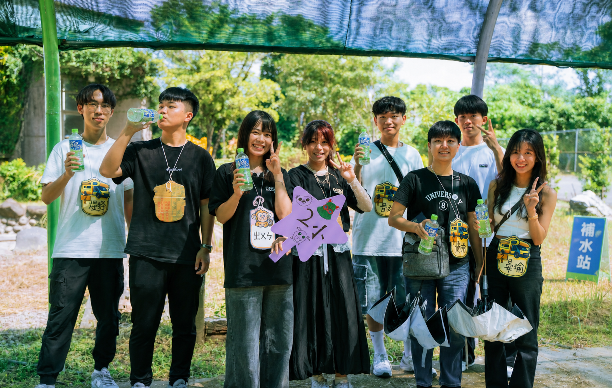
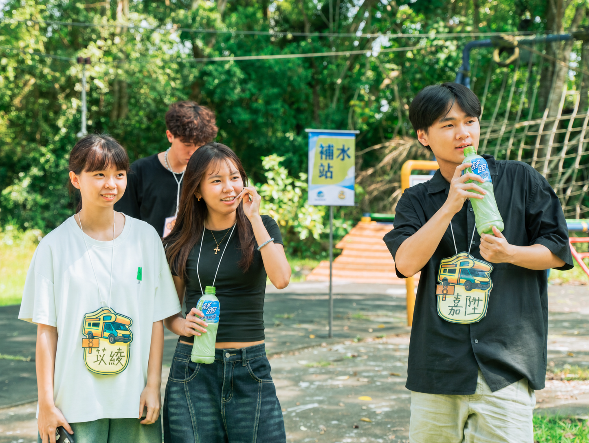
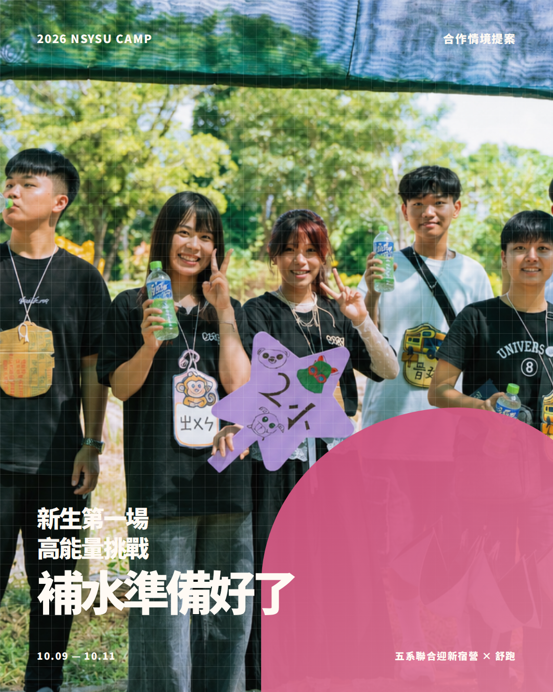
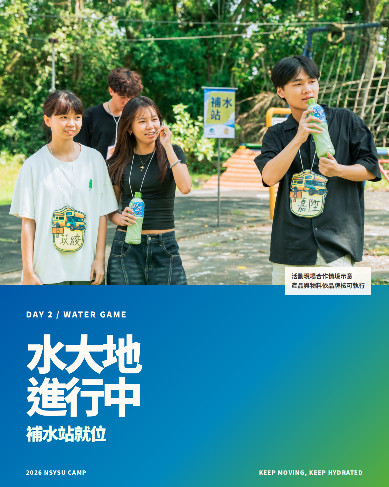
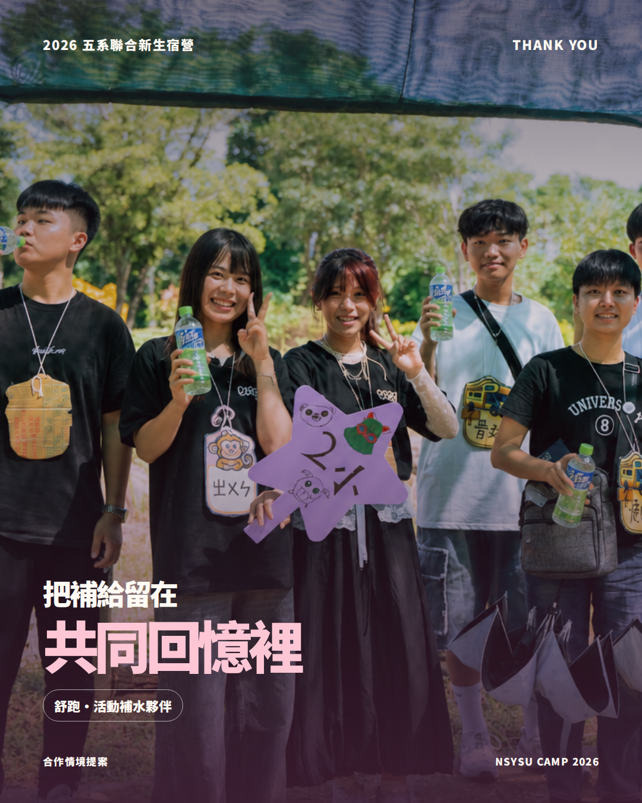

核心合作邀請600 瓶舒跑
以全體 150 人、共 4 個高活動量補給節點 規劃；每一節點配置 150 瓶，讓物資數量直接對應實際發放，不以模糊曝光換取贊助。
- DAY 2・抵達走馬瀨活動開始前的集合與準備150 瓶
- DAY 2・水大地結束高活動量後的休息節點150 瓶
- DAY 2・晚會前盥洗、晚餐與夜間活動銜接150 瓶
- DAY 3・戶外活動前結業、團隊活動與安平移動前150 瓶
PRIVATE PROPOSAL / 2026.08
國立中山大學・五系聯合迎新宿營
給舒跑的一份合作邀請：讓補水不只出現在 Logo 牆，而是在五系新生第一場高活動量的共同記憶裡，成為每一次重新出發前的真實陪伴。


WHY SUPAU
第二天走馬瀨的大地遊戲與水大地、第三天的團隊活動與安平移動，都是參與者需要調整節奏的節點。我們會持續提供飲用水、遮陽、休息與人員照護；也期待舒跑作為活動中的補水與電解質補充選項，讓品牌以實際使用情境被新生記住。
產品資訊依舒跑官方頁面為準 ↗以全體 150 人、共 4 個高活動量補給節點 規劃；每一節點配置 150 瓶，讓物資數量直接對應實際發放，不以模糊曝光換取贊助。
DECISION PAGE
這不是以勾選表販售曝光。我們把舒跑需要決策的品項、主辦方應履行的交付，以及可回報的成果放在同一頁；品牌可依實際可提供的資源選擇合作組合。
優先合作方案
| 合作項目 | 主辦方交付 | 品牌可確認事項 | 回報憑據 |
|---|---|---|---|
| 現場補水執行 | 4 個補給節點、每點 150 瓶；活動前完成發放動線與工作人員分工。 | 600 瓶品項／容量、到貨與配送方式。 | 現場照片、點位與發放紀錄。 |
| 現場品牌物料 | 在核可點位放置立牌、海報或展示物；不遮蔽安全指示與活動動線。 | 是否提供物料、規格、擺放限制與審稿規範。 | 物料設置照片與現場紀錄。 |
| 活動官網 | 合作頁品牌卡、官方連結與經核可的簡短介紹。 | Logo 檔、連結、名稱與上線前審核。 | 上線截圖與網址。 |
| Instagram 合作內容 | 活動前、現場、活動後各 1 則內容；文案與視覺均先送品牌確認。 | 是否採用、標記帳號、素材與文案規範。 | 貼文／限動連結與平台可取得數據。 |
| 成果結案 | 活動後 14 日內整理合作執行摘要，不承諾未經驗證的觸及或轉換。 | 品牌指定的成果欄位與收件窗口。 | 結案 PDF、照片與公開連結。 |
OPTIONAL SUPPORT
若品牌另提供現金 2,500–4,000 元 或等值執行物資，可用於補水點識別、現場宣傳物與內容製作。物資折抵與新增交付項目以雙方確認的合作價值為準，不採「物資自動升一級」的模糊規則。

活動前報名與活動亮點
活動中真實現場紀錄
活動後合作回顧與致謝EXECUTION & SAFETY
破冰、夜教、宵夜
校園內集合與活動，隊輔帶領、點名與安全說明。走馬瀨大地遊戲、水大地、晚會
4 個補給節點中的前 3 點，將配置在集合、活動結束與晚會銜接時段。結業、團隊活動、安平探索
在戶外活動與移動前配置最後一個補給節點，結束後返抵中山大學。飲用水、急救箱、點名與醫療聯絡表全程配置；各活動前完成安全說明與器材檢查。
雨勢、高溫或其他重大事件依校方、場地方與政府指示調整；總／副召保有暫停或中止活動決定權。
舒跑產品是補水選項，不取代飲用水、遮陽、休息與照護；所有對外品牌文字皆經確認後發布。
NEXT STEP
若舒跑願意評估本案，我們將依品牌回覆完成品項、數量、品牌素材、配送與交付項目確認，並提供最終執行版本。